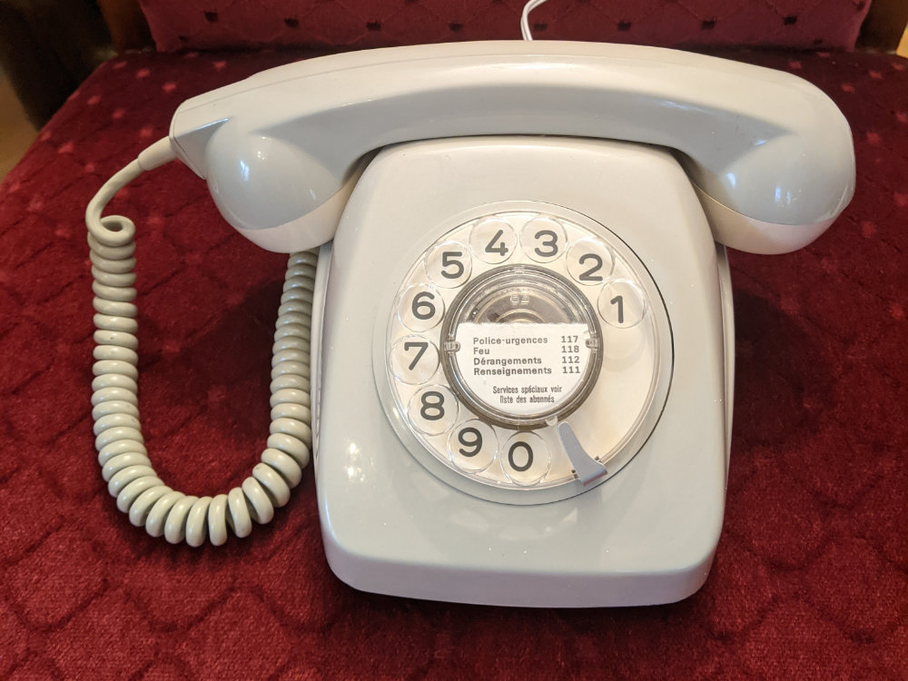
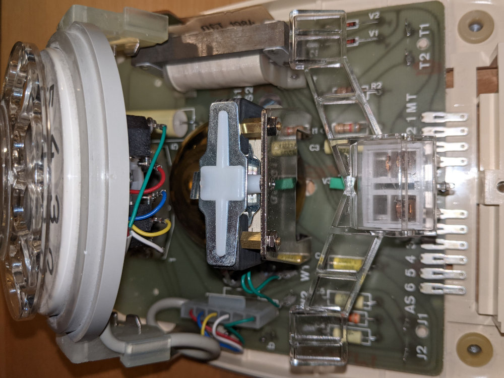
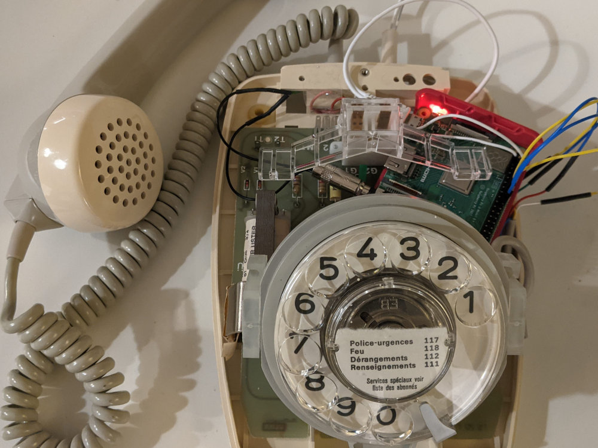

entry
enso
Putting a rotary phone to good use
1,850 words, 10-minute read
Talks always inspire me one way or the other
After attending a talk from Vasilis at the front conference in Zürich his "nerd-projects" caught my eyes. In one of the projects he was using an old rotary phone to select playlists on spotify. Reading up on the subject, the idea of the fairytale-phone was born - using an old rotary phone to tell stories to our 3.5 years old kid. While kids love you telling them books, ours wants to listen to the same story again and again and again... enter the digital version of the storyteller.

While it's a wild guess, that the kid will like the phone, I'm pretty sure, that I'll find a way to reuse the phone, if it's not a success. However there is a catch - this seemed a rather ambitious project that might be crossing the was at the border of my abilities.
Drop me a line, if you need some help. Eventually I might copy the code to github, if I deem it finalized.
Voice interactions
Since there is no screen on an old phone, all feedback has to be done using voice.
Voice interactions in interfaces geared towards little kids are really hard to do. Even more so, if you need to do them in Swiss German. There is no real espeak-ng language, the phone sounds like a bot all the time (I can get from menacing to crazy). Will mbrola fix this? Initially I doubted this. While mbrola has a better output, it's still far from perfect. Tricky words make the phone-voice sound strange. These include Swiss articles or words we tend to shorten, also french, italian, english loan-words (that espeak-ng will then misinterpret due to the usage of german for speech).
However these shortcommings give me a reason to simplify the interaction. Instead of whole sentences like "If you'd like to listen to Aladdin select the Number one" I can use "Aladdin: one". This makes it easier to remember the list's with up to 10 commands per level of navigation and makes it easier to remember numbers.
On remembering numbers on a phone: Without knowing better, I assume, voice interfaces need to follow the "Option:selection-task" pattern. What option is available, followed by how to select the option. Thus a user can listen to options and only has to memorize the selection-task, once the desired outcome has been spoken. This should help minimize mental load.
Menu on a rotary phone
I assume the following things, that will have to stand the --test of kid-- at the end of the project:
- On the top-level, most of the options have to be tales to be told
- One level of tales will be sufficient - multiple levels get rather cumbersome to navigate
- While a tale is running, the listener needs ways to abandon the tale (in case of error correction), pause and resume (this can be one button), maybe fast forward, maybe rewind a bit, get some option to find the menu
- Some interactions can be naturally triggered by lifting up the speaker-set, as starting up the phone (I hope, I can get a bell ringing as soon as it is ready), pausing (hang up), resume (pick up again), shutdown (hang up and don't touch it for 10 minutes).
- I'm not sure yet, if it makes sense to save a timestamp of the fairytale when shutting down (so that a tale can be resumed)
Roadmap to success
- Buying and setting up a raspberry pi (done, headless using putty / WinScp for transfer)
- Learning to programm python (or copying like a master) (done-ish - so far it is keeping together)
- Getting my hands dirty with espeak-ng (done, espeak-ng is working, had to pipe everything through aplay though as the sound on the pi is rather robotic else)
- Install and set up mbrola for better voices (done, also installed some voices and the difference in voice output is amazing, however it's hard to get it to speak swiss dialect, as swiss is apparently not far enough from german to give it a distinct voice profile. Well, strange Swiss german it is for the time being. Also see next point)
- Maybe use SSML for additional sculpting of swiss german - well, this might be rather tricky, it might be easier to just record some mp3's.
- Learning about voice-interactions (done, similar to the experience you can get calling your telco-provider - however, this is, where I see the most potential)
- Devising a "menu" structure for selecting fairytales, that can be realized using a rotary phone (done-ish, see above, obviously needs some tests wiht a real person)
- Having the raspberry pi play mp3-files (or whatever format is needed) (done using libVLC after failing with pygame and mpg123)
- Convert the mp3-files into mono-files (or at least let them have two identical channels) - the phone only has a mono output (one speaker) (done, usability-testing was needed to find this flaw)
- Finding a suitable rotary phone - a "really old" one - the newer ones cheat with the rotary input making everything more complex (done, it's a grey model Modell 70 NS. The phone has a lot of additional circuits inside, that have apparently never been used. The phone itself was rather dirty but easy to disassemble and clean - apart from the handset-cable that needed a bit more time)
- Understanding the workings of a rotary phone, realizing that it's more complex than the examples and not everything can be used as intended (done - looking at you, bell. The bell within the phone needs a lot of power to ring, something the Pi can't provide, also the bell uses a lot of space. Not only the bell but that electromagnet, the resistors and all the part's I don't even know the name of)

- Connect the rotary phone dial to the pi (Understanding the mechanical switches was easier than I initially thought, since the Modell 70 NS has everything in the open and clearly visible. There are two circuits to hook up, one counting the numbers and one opening and closing the rotary switch. With the help of the internet, it was easily possible to hook this up to the )
- Reading out the values dialed (this works with a combination of scripts - see sources below)
- Having the sound come out of the handset (done, attached a 3.5mm phone connecter plugs - the loudspeaker works, the microphone is not connected)
- Making sure, it's not killing everybody that touches the thing (well, it's encased and there is not enough power on the raspbi itself)
- Putting everything into the box (at the end, I had to remove basically everything but the rotary dial and the hand-set-toggle-thing, to make space for the pi)

- Wrapping everything up as a nice present (Done, last-minutish finished, we only put some gift ribbons around it!)
- Teaching a kid, who can neither count nor read numbers, how to manipulate technology, that has been out of use for like 30 years, to select a tale to be told on its own (ongoing)
The list is rather long - and I was afraid, that I might not be able to finish that, but the phone is working and the kid really likes to listen!
Todos
Due to christmas not being postponed, the shipped version is an alpha version. I plan to include the following features
- Shut down on hanging up the phone (well, I can't kind of tell if the handset is on the phone or if someone pressed the button, or if someone picked the phone, only that an interaction just happened - I think there is some need for additional wiring...)
- But only after some minutes of idle time
- Initially pause a story (and maybe go back 10 secs)
- Pick up the story, where it was left
- Add some rewind/forward functionality to skip
- Maybe give an option to add an additional headset for a second listener.
- Organize more fairytales (ongoing)
- Streamline the voice-interaction (ongoing)
- Try to fix issues where someone turns the rotary dial while the phone is not yet waiting for input.
- Make a copy of that SD-Card so that I can reinitialize if someone just kills the phone and eliminiates the file-system
- Try to find a fix to the "kids-problem" where, strange enough, a little kid can't just turn the rotary dial as it is supposed to... (give it 2-3 years)
- Lots more...
Sources
- All can be found on google
- The initial inspiration can be found in this basic script as referenced from vasilis
- An additional source is this instructables article
- Understanding a rotary dial might be easier with this video on youtube
- Uses Python, PIP, Pygame (not anymore - could not get it working), mpg123 (not anymore - was not possible to get sound), VLC
- For the voice espeak-ng and mbrola (using the german voices for swiss german). To build mbrola, use this guide on espeak-ng-github. Note, that there are no packages that can just be installed for mbrola on raspberry pi. Voices also need to be downloaded by hand and moved to the corresponding directory.